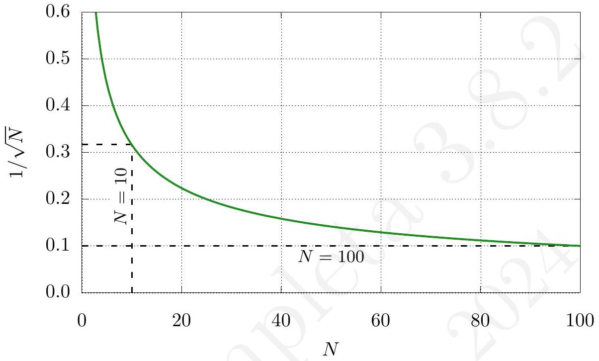

Como su nombre indica, una medida directa de una magnitud es aquella que se obtiene por lectura directa en un cierto aparato (por ejemplo la masa en una balanza) sin necesidad de hacer cálculo alguno.
Llamamos precisión del aparato de medida a la mínima desviación medible en la escala graduada del instrumento (p. ej. en una báscula en la que la distancia entre dos marcas de la escala sea de 1 gramo, la precisión de la misma es 1 gramo; en un aparato digital, su precisión es el orden de la última cifra que aparece en la pantalla del mismo).
Al efectuar una medida directa individual, el orden de la última cifra significativa del resultado de la medida es una elección hasta cierto punto subjetiva, que depende de la elección del experimentador, siempre considerando que no puede ser mucho menor que la precisión del aparato. Por ejemplo, supongamos que tenemos un regla con división en milímetros y medimos que un lápiz se encuentra más o menos en torno a los 36 mm de longitud. Sería razonable considerar el rango más probable del valor real de la medición se encuentre entre los 35,5 y los 36,5 \mathrm{~mm}. Es decir diríamos que l=(36,0 \pm 0,5) \mathrm{mm}. A menudo se emplea esta convención: el error asociado a una medida directa individual es la mitad de la precisión del aparato.
Sin embargo, puede haber aparatos en donde la diferencia entre dos marcas de escala sea muy grande y claramente se observe que la medida queda mucho más cerca de un valor que de otro, pudiéndose realizar una estimación del valor, interpolando los dos valores del aparato entre los que se encuentra la medida. O todo lo contrario, que consideremos que, debido a las circunstancias particulares del experimento, debamos elegir un error mayor que la precisión del aparato. Como se ha comentado en la introducción, el sentido común juega aquí cierto papel y el estudiante debe razonar y expresar adecuadamente qué criterio ha empleado a la hora de obtener los errores asociados a las medidas directas, siempre tomando en cuenta que es más adecuado tener una visión pesimista de la estimación de error, es decir, utilizar cotas máximas razonables en la estimación de la incertidumbre.
El error asociado a un instrumento de medida viene dado en general por el fabricante, y este viene especificado con las cifras significativas correctas. Es decir, si en un instrumento el error viene dado como, por ejemplo, e=0,1 \mathrm{~m}, ese es el error que debemos usar. En ningún caso debemos añadir cifras significativas, pues estaríamos falseando la precisión dada por el fabricante.
Supongamos que hemos realizado N medidas directas individuales de una magnitud que denotamos como X, siendo x_{j}\{j=1,2, \ldots, N\} cada uno de los resultados individuales. El valor esperado de la magnitud, denotado por X^{*}, se identifica con la media aritmética de las cantidades x_{j}, que denotamos ahora por simplicidad mediante x (a menudo se escribe también \bar{x} o \langle x\rangle ):
X^{*}=x=\frac{1}{N} \sum_{j=1}^{N} x_{j}
Esta forma de obtener el valor esperado es la que se usará por defecto salvo que se especifique lo contrario. Otras formas de obtener el valor esperado son las siguientes:
x=\left(\frac{1}{N} \sum_{j=1}^{N} \frac{1}{x_{j}}\right)^{-1} .
Esta cantidad es adecuada para obtener el promedio correcto en cantidades definidas por tasas o ratios. Por ejemplo, la velocidad media de un móvil que recorre distancias iguales a distintas velocidades es la media armónica de éstas.
x=\left(x_{1} x_{2} \ldots x_{N}\right)^{1 / N} .
Se usa, por ejemplo, para determinar la tasa de crecimiento promedio correcta en periodos de tiempo iguales con distintas tasas de crecimiento. Obsérvese que, si x_{j}>0 \quad \forall j, entonces la media geométrica es la exponencial de la media aritmética de \log x_{j}.
x=x_{\frac{N+1}{2}}^{\prime},
y si N es par:
x=\frac{x_{N / 2}^{\prime}+x_{N / 2+1}^{\prime}}{2} .
Esta forma de definir el valor esperado es útil si los datos x_{j} siguen una distribución de probabilidades asimétrica o sesgada.
Definimos el grado de libertad de un conjunto de datos como el número de ellos que pueden ser variados arbitrariamente. Esto es, si tomamos en un experimento N medidas, en principio podemos decir que tiene N grados de libertad. Esto es así porque bastaría haber tomado las medidas con condiciones distintas (en otro instante de tiempo, por ejemplo) para que los valores particulares que toman las N medidas fuera distintos. Ahora bien, si alguno de los datos de nuestro conjunto depende funcionalmente de los anteriores a través de una relación existente entre los datos, decimos entonces que hay una ligadura dado que ese valor está unívocamente determinado a partir de todos los demás. El número de grados de libertad, referido como \nu (letra griega «nu»), es entonces el número total de datos N menos el número de ligaduras, f. Podemos pensar en un conjunto de datos como la fuerza, F, la masa m y la aceleración a. Podríamos pensar que el conjunto \{F, m, a\} tiene tres grados de libertad, pero al existir una ligadura (la ecuación F=m a fija el valor de la fuerza a partir de los datos de la masa y la aceleración) el número de grados de libertad es dos.
El concepto de grados de libertad lo utilizaremos frecuentemente al hablar de desviaciones típicas, ajustes por mínimos cuadrados, etc., por lo que merece la pena detenerse a ver algún ejemplo.
Ejemplo 2.1. Tomamos un conjunto de datos \left(x_{1}, x_{2}, \ldots, x_{N}\right) independientes entre sí. Obtenemos, a partir de ellos, las siguientes expresiones ¿Cuáles son los grados de libertad? a) \frac{1}{N} \sum_{i=1}^{N} x_{i}. b) \sum_{i=1}^{N}\left(x_{i}-X^{*}\right), donde X^{*} es la media aritmética. c) \sum_{i=1}^{N} m x_{i}+b, donde m y b son dos parámetros que se obtienen a partir de los valores del conjunto \left(x_{1}, x_{2}, \ldots, x_{N}\right).
Una medida adecuada de la dispersión de los datos respecto del valor esperado viene dada por la varianza del conjunto de datos o desviación cuadrática media:
s^{2}(X)=\frac{1}{N} \sum_{j=1}^{N}\left(x_{j}-x\right)^{2} .
La varianza nos dice cómo de impreciso ha sido el conjunto de datos obtenido, que es lo que denominamos muestreo. Esta expresión tiene un término cuadrático que hace que todos los errores contribuyan a la medida del error al ser positivos. Sin ese término cuadrático, errores en uno y otro sentido compensarían entre sí, falseando la precisión del resultado obtenido. Precisamente por ser una medida cuadrática, lo usual es referirse a su raíz cuadrada, la desviación estándar o desviación típica, que tiene las mismas unidades que la magnitud medida y tiene un significado preciso como estimador del error.
La raíz de s^{2} es la desviación típica o desviación estándar:
s(X)=\sqrt{\frac{1}{N} \sum_{j=1}^{N}\left(x_{j}-x\right)^{2}} .
Conviene señalar que cuando el número N es pequeño, suele sustituirse el denominador N por N-1, de modo que la desviación típica tome la forma:
s(X)=\sqrt{\frac{1}{N-1} \sum_{j=1}^{N}\left(x_{j}-x\right)^{2}}
Un argumento cualitativo para justificar esta fórmula para la desviación típica es que, dado un conjunto de N datos x_{j}, el valor de x elimina un grado de libertad, ya que la media se obtiene mediante una ecuación de ligadura entre los N números x_{j}. De este modo N-1 indica el número de grados de libertad existente. Otro argumento cualitativo es que, con la definición de la ecuación (2.4), si solo se tiene un dato ( N=1 ), tendríamos que s=0 / 0 o una dispersión «indeterminada». Sin embargo, con la definición dada en la ecuación (2.3), obtendríamos s=0, una dispersión nula. Puede argumentarse que es más adecuado, cuando solo se tiene un dato y no se sabe nada de la dispersión, que el resultado de la desviación típica sea «indeterminado» a que sea nulo.
¿Cómo distinguir valores «grandes» y «pequeños» de N ? Podemos hacer una estimación del error relativo cometido al usar una forma u otra. Así, un sencillo cálculo nos dice que para N \geq 50 la diferencia entre ambas expresiones es menor del 1 \%. Si nos basta una precisión del 10 \%, con solo 5 medidas ya nos es indiferente usar una u otra. Con estos valores extremos en mente, basta usar el sentido común para saber cuándo usar 1 / N y cuándo usar 1 /(N-1).
Sabemos que todo proceso de medida lleva aparejado un error que describe, en términos cuantitativos, la incertidumbre asociada a la propia medición. Determinar esta incertidumbre es importante para establecer grados de confianza en los resultados y poder extraer conclusiones significativas de nuestras medidas. En principio, como experimentadores deberíamos tener en cuenta todas las potenciales fuentes de error que contribuyen a dar un resultado distinto del verdadero: la precisión del instrumento que utilizamos, los posibles errores de calibración, errores de cero, imprecisiones en el proceso de medida, factores externos, etc. Todos estos factores pueden contribuir a la imprecisión del resultado, por lo que debemos establecer un criterio que nos permita dar resultados con un cierto grado de confianza. En general, en Técnicas Experimentales, nos valemos de un criterio pesimista por el que tomamos como error el máximo de entre todos los posibles. Aunque formalmente deberíamos considerar la suma de todos ellos (en mayor o menor contribución) consideramos que si uno de ellos es significativamente mayor que el resto, el error vendrá determinado por él. Si, por ejemplo, tenemos una regla graduada en centímetros, podemos despreciar los errores asociados a la dilatación térmica de la misma entre un día y otro ya que probablemente sean mucho menores que el asociado a la precisión del aparato.
La estimación que se haga del error absoluto dependerá del número N de medidas realizadas. Definamos previamente las siguientes cantidades:
D_{m}=\frac{x_{\operatorname{máx}}-x_{\operatorname{mín}}}{2},
donde x_{\text {máx }} es el resultado de la medida de valor más alto y x_{\text {mín }} el de valor más bajo.
Con estas definiciones en mente, una estimación del error absoluto \epsilon viene dada por:
\epsilon=e_{p}
\epsilon=\operatorname{máx}\left(e_{p}, D_{m}\right) \text {. }
\epsilon=\operatorname{máx}\left(e_{p}, s(X)\right) \text {. }
Notemos aquí que \epsilon nos da una medida de la incertidumbre esperable al realizar una medida individual. La precisión, la dispersión y la desviación típica son estimadores independientes del número de medidas. Para un buen experimentador y unas condiciones ideales, cabe esperar que el error dado por la precisión sea aproximadamente igual a la dispersión o a la desviación típica. Pero si existen otras fuentes de error (por ejemplo, el instante en el que se inicia un cronómetro), es probable que la precisión del instrumento quede enmascarada por la dispersión o la desviación típica, de modo que sean estas las que determinen el error (promedio) de las medidas. En cualquier caso, estos valores son independientes del número de medidas, ya que reflejan valores medios de incertidumbres individuales.
1En muchos casos puede surgir la duda en la determinación directa de una magnitud física sobre el número de medidas que se han de realizar. Hay que tener en cuenta que estos criterios son relativos y dependen de las particularidades del sistema experimental.
Para sistemas experimentales más o menos bien controlados, no se suele considerar como aceptable un resultado en el que el error relativo sea mayor que el 10 \%. En este caso hay que aumentar el número de medidas hasta conseguir disminuir esta cifra. Si se observase que el alto error se sigue manteniendo, entonces nos encontraríamos con que el procedimiento experimental resulta limitado para los propósitos deseados, debiendo (lógicamente, solo si resulta posible) cambiar de método. Aunque siempre es posible que no haya una forma mejor de realizar la medida o que no se disponga de mejores materiales o aparatos. Por tanto, la evaluación de la validez o no del valor obtenido y del número de medidas empleadas también depende de la evaluación acerca del tipo de material utilizado y de los medios disponibles.
Supongamos que hemos realizado un número N suficientemente grande de medidas y nos preguntamos por el valor medio de las mismas, x. En la sección 2 ya vimos cómo calcular este valor. Nos interesa ahora conocer el error asociado a la media, que llamamos s(x). En principio, cabe esperar que si realizamos un gran número de medidas el error de la media sea menor que si tomamos solo unas pocas medidas. Puede probarse (lo haremos en el tema 3) que el error de la media viene dado por:
s(x)=\frac{\epsilon}{\sqrt{N}},
donde \epsilon no es más que el error promedio de las N medidas individuales (que podrá venir dado por la precisión del instrumento, por la dispersión, o por la desviación típica). En el caso concreto en el que \epsilon=s(X), obtenemos la desviación típica de la media (también denominado error estándar de la media), que es:
s(x)=\sqrt{\frac{1}{N(N-1)} \sum_{j=1}^{N}\left(x_{j}-x\right)^{2}} .
Hay que distinguir la desviación típica de un conjunto de datos s(X) (que aparece en las ecuaciones 2.3 o 2.4 ) y la desviación típica de la media de esos datos s(x) (ecuación 2.9). La relación entre ambas magnitudes es
s(x)=\frac{s(X)}{\sqrt{N}}
La diferencia conceptual entre la desviación estándar (2.4) y el error estándar de la media (2.9) es que la desviación estándar es un estimador de la anchura de la distribución de un conjunto de medidas individuales, mientras que el error estándar de la media es un estimador de la anchura de la distribución de un conjunto de medias, por tanto, el error estándar de la media es un indicador mejor que la desviación estándar para la incertidumbre de una media.
Notemos que el factor 1 / \sqrt{N} nos indica que al calcular el error asociado a la media de un conjunto de datos, cuanto mayor sea ese conjunto menor será el error asociado. Así, formalmente, para un número infinito de muestras el error asociado a la media será idénticamente nulo.
De cara a establecer un criterio consistente, e independientemente del número de medidas realizado, cuando nos preguntemos por el error asociado a la media de ellas, usaremos siempre la expresión (2.8).
Ejemplo 2.2. Supongamos la siguiente tabla de resultados asociada a N=11 mediciones del tiempo de caída libre de una masa desde una altura de 2 m con un sistema de medición de tiempos cuya precisión es de una centésima de segundo ( p=0,01 \mathrm{~s} ):
| Medida | 1 | 2 | 3 | 4 | 5 | 6 | 7 | 8 | 9 | 10 | 11 |
|---|---|---|---|---|---|---|---|---|---|---|---|
| (t \pm 0,01 \mathrm{~s}) | 0,62 | 0,52 | 0,62 | 0,63 | 0,62 | 0,62 | 0,61 | 0,58 | 0,66 | 0,65 | 0,67 |
Calcule el valor esperado del tiempo de caída libre de la masa con su error.
Dado que tenemos 11 medidas, el error absoluto \epsilon vendrá dado por el máximo entre la precisión del cronómetro (0,01 \mathrm{~s}) y la desviación típica s(X). Calculamos entonces la media de los tiempos:
\bar{t}=\frac{\sum_{j=1}^{11} t_{j}}{11}=0,6181818 \ldots \mathrm{~s} .
De modo que la desviación típica es:
s(X)=\sqrt{\frac{\sum_{j=1}^{11}\left(t_{j}-\bar{t}\right)^{2}}{(11-1)}}=0,0409 \ldots \mathrm{~s} .
Como la desviación típica es mayor que la precisión, tomamos como error de las medidas \epsilon=s(X). Así, el error de la media será:
s(x)=\frac{s(X)}{\sqrt{N}}=0,012 \mathrm{~s}
Por lo que, finalmente, el valor esperado del tiempo de caída libre y su error serán:
t=(0,618 \pm 0,012) \mathrm{s} .
Sabemos que para calcular la desviación estándar necesitamos conocer previamente el valor medio de la magnitud. En el ejemplo anterior, el valor de s(X) depende de \bar{t}=0,61818 \ldots s. Cabe preguntarse entonces ¿cuántas cifras significativas debemos tomar para \bar{t} ?
En este caso concreto, un sencillo cálculo permite ver que es indiferente tomar como valor medio \bar{t}=0,62 \mathrm{~s}, \bar{t}=0,618 \mathrm{~s}, \bar{t}=0,6182 \mathrm{~s} o \bar{t}= 0,61818 \mathrm{~s}. En todos los casos se llega a la misma conclusión en la que s(x)=0,012 \mathrm{~s}.
En casos más generales, lo importante es que los cálculos intermedios no aumenten el error del resultado. Veremos más adelante (en el ejercicio 3.5) un criterio cuantitativo para fijar el número de cifras significativas. Una práctica habitual es, no obstante, tomar para las magnitudes intermedias una o dos cifras significativas más respecto de la posición decimal de su error, de modo que no se añadan errores de redondeo adicionales.
Parece claro que si disponemos de una única medida, el error asociado vendrá determinado por la precisión del instrumento de medida. El hecho de aumentar el número de medidas (formalmente, incrementar la muestra estadística) nos sirve para minimizar el error accidental cometido en nuestro proceso de medida. Es razonable suponer que si tomamos cien medidas nuestro resultado será más preciso (en el sentido de precisión y exactitud) que si tomamos solo dos medidas. El error de la media refleja justamente este comportamiento. De hecho, esto puede verse de forma explícita en la ecuación (2.8), donde existe un factor 1 / \sqrt{N} que nos dice que, si aumentamos el número de medidas (si aumentamos el valor de N ), disminuirá la desviación típica.
Pero aumentar mucho el valor de N tampoco permite mucha mejora, porque la forma de la función \sqrt{N}, hace que su valor aumente muy poco para valores de N muy grandes. Es decir, si queremos aumentar la precisión en un factor 10 , tendremos que incrementar N un factor 100 , algo que no parece ni por asomo razonable. Podemos ver esto mejor en la curva representada en

la figura 2.1. Si tenemos N=10 medidas, el factor 1 / \sqrt{N} es solamente algo mayor que 0,3 ; pero si aumentamos a N=100 ( 90 medidas más), el factor pasa a ser solamente 0,1 . Es decir, solamente hemos reducido en un factor 3 el error asociado a la media después de haber realizado 90 medidas adicionales. Es más, los errores sistemáticos que podamos estar cometiendo no se reducen aumentando el número de mediciones. Por tanto, si en la práctica se quiere aumentar considerablemente la precisión de la medida, lo más razonable tal vez sea mejorar la forma de medir, más que medir indefinidamente de la misma forma.
Una vez que hemos definido la desviación típica de la media, podemos explicar más en detalle el concepto de media ponderada comentado anteriormente. La media ponderada permite obtener el valor esperado de un conjunto de valores x_{j} «pesando» cada uno de ellos según una cierta cantidad w_{j}. En general se define la media x como:
x=\frac{\sum_{j=1}^{N} x_{j} w_{j}}{\sum_{j=1}^{N} w_{j}}
Puede probarse 2^{2} que la desviación típica de la media toma el valor:
s(x)=\sqrt{\frac{\sum_{j=1}^{N} w_{j}^{2} s_{j}^{2}}{\left(\sum_{j=1}^{N} w_{j}\right)^{2}}},
donde notamos que cada medida x_{j} tiene asociado un error s_{j}. Si asumimos que todos los errores son iguales y toman el valor s(X), entonces la ecuación (2.13) se simplifica:
s(x)=s(X) \sqrt{\frac{\sum_{j=1}^{N} w_{j}^{2}}{\left(\sum_{j=1}^{N} w_{j}\right)^{2}}}=s(X) \sqrt{\sum_{j=1}^{N} w_{j}^{\prime 2}}
donde hemos definido:
w_{j}^{\prime}=\frac{w_{j}}{\sum_{i=1}^{N} w_{i}}
Existen diversas configuraciones de pesos w_{j} que son usadas frecuentemente en la bibliografía científica. El caso más sencillo es aquel que considera todos los pesos w_{j} iguales y de valor w_{j}=w. Sustituyendo en la ecuación (2.11) obtendríamos directamente la media aritmética definida en la ecuación (2.1). Una elección particularmente útil de pesos en trabajos experimentales viene dado por:
w_{j}=\frac{1}{s_{j}^{2}},
2donde s_{j} es, de nuevo, el error asociado a x_{j}. Como sabemos, este error puede venir dado por la precisión del instrumento de medida (si se trata de una medición individual) o por cualquier otro estimador como la desviación típica (si es el resultado de un gran número de medidas individuales). Así, supongamos que hemos medido una determinada magnitud a través de experimentos distintos y obtenemos una serie de resultados, cada uno con una determinada desviación típica: x_{1} \pm s_{1}, x_{2} \pm s_{2}, etc. La media ponderada sería, en este caso, x=\frac{\sum_{j} x_{j} / s_{j}^{2}}{\sum_{j} 1 / s_{j}^{2}}, donde la desviación típica de la media, definida a partir de la ecuación (2.13), se simplifica a: s(x)=\frac{1}{\sqrt{\sum_{j} 1 / s_{j}^{2}}}
Véase que los pesos son proporcionales a las inversas de los cuadrados de las desviaciones típicas, con lo que los x_{j} con menor s_{j} serán los que tengan mayor peso. De este modo, damos más importancia a aquellos valores que tienen un menor error (una menor dispersión) frente a aquellos valores con un error mayor.
Ejemplo 2.3. Tres científicos proporcionan los siguientes resultados de la medida de una misma magnitud: 2,31 \pm 0,01,2,32 \pm 0,02 y 2,29 \pm 0,04. Obtenga la media ponderada. A continuación, obvie el último de los valores y compare con el resultado obtenido usando todos ellos.
Si aplicamos las fórmulas anteriores obtendremos que x=2,311 \pm 0,009. Pero si ignoramos el último de los valores, que es el que tiene una desviación más alta, obtendremos x=2,312 \pm 0,009, que es casi el mismo resultado. De hecho, vemos que usando una media ponderada prácticamente el único valor que cuenta es el primero, por ser el de menor desviación.
Ej. 2.1 - Obtenga la media aritmética y la desviación típica (con N-1 grados de libertad) de las cantidades: x_{i}=2,7 ; 2,3 ; 2,4 ; 2,8 ; 2,1.
Ej. 2.2 - Halle el valor esperado paro los siguientes resultados que se han obtenido para una misma magnitud: x_{i}=2,7 \pm 0,1 ; 2,32 \pm 0,05 ; 2,4 \pm 0,2. Emplee ponderación pesada en los errores.
Ej. 2.3 - ¿Cuál es el valor esperado de una medida realizada 10 veces con los resultados: x_{i}=3,7 ; 3,3 ; 3,5 ; 3,6 ; 3,1 ; 2,9 ; 3,0 ; 3,3 ; 3,2 ; 3,5 ? (a) \quad x=3,3 \pm 0,1. (b) x=3,31 \pm 0,13. (c) x=3,3 \pm 0,4. (d) x=3,31 \pm 0,03.
Ej. 2.4 - Se estima el valor de la aceleración de la gravedad a través de tres experimentos distintos y se obtienen los siguientes valores con sus desviaciones típicas: g_{1}=(9,81 \pm 0,13) \mathrm{m} / \mathrm{s}^{2}, g_{2}=(9,82 \pm 0,12) \mathrm{m} / \mathrm{s}^{2}, g_{3}=(9,79 \pm 0,14) \mathrm{m} / \mathrm{s}^{2}. Obtenga una estimación para la aceleración de la gravedad g empleando ponderación pesada en los errores.
Ej. 2.5 - Utilizando una cinta métrica graduada en mm medimos la longitud de una mesa, obteniendo los siguientes valores: l_{1}=129,2 \mathrm{~cm}, l_{2}=129,3 \mathrm{~cm}, l_{3}=129,0 \mathrm{~cm}. A la vista de estos resultados ¿qué podemos concluir? (a) Será necesario tomar más medidas y el error vendrá dado por el máximo entre la precisión de la cinta métrica y la desviación típica de la media. (b) Será necesario tomar más medidas y el error vendrá dado por el máximo entre la precisión de la cinta métrica y la dispersión de los datos. (c) La dispersión de los datos es suficientemente buena y el error vendrá dado por el máximo entre la precisión de la cinta métrica y la propia dispersión. (d) La dispersión de los datos es suficientemente buena y el error vendrá dado por el máximo entre la precisión de la cinta métrica y la desviación típica de la media.
En este contexto dispersión es un concepto técnico que no debe confundirse con el uso que hasta ahora hemos dado a la palabra «dispersión», que corresponde a la definición coloquial usual.↩︎
Para obtener este resultado es necesario hacer una propagación cuadrática del error, tal y como se explica en el tema 3 (ecuación 3.6).↩︎